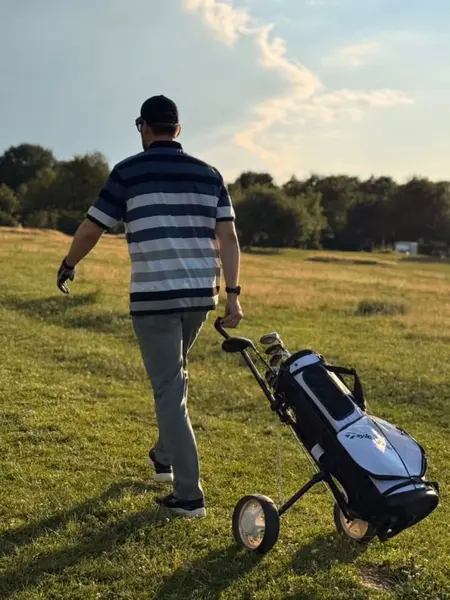
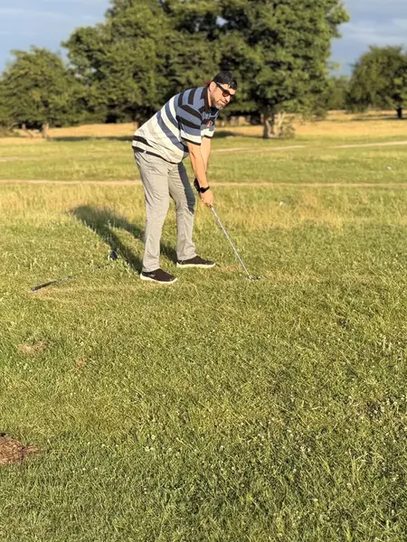
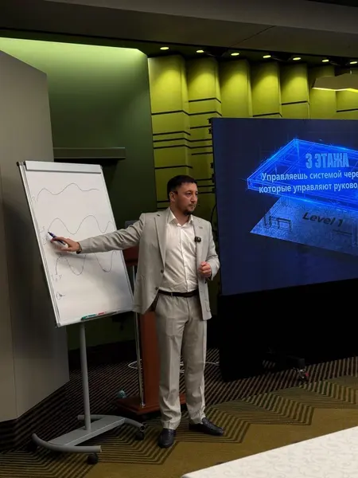
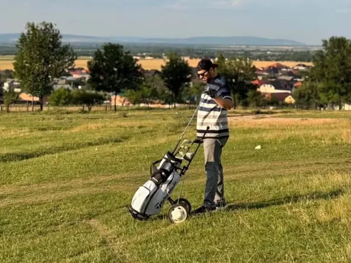

Спокойные решения
Здесь нельзя выиграть на эмоциях. Нужно видеть поле, рассчитать удар и держать внутреннее спокойствие.
Обучаем с нуля предпринимателей и руководителей. За одно занятие: правила и этикет, постановка удара и первая игра.
Записаться в директ
Игра в селе Мартан-Чу, июнь 2026
Во многих странах гольф давно стал спортом деловых людей. На поле видно характер человека, стиль мышления и отношение к правилам.
Здесь нельзя выиграть на эмоциях. Нужно видеть поле, рассчитать удар и держать внутреннее спокойствие.
Игра учит думать на несколько шагов вперёд и не суетиться. Тот же навык нужен в управлении компанией.
Клуб собирает предпринимателей и руководителей из разных сфер. Знакомства складываются в игре.
Свежий воздух, прогулка по полю и игра с правилами и этикетом. После неё голова работает лучше.
Гольф требует не силы, а точности, спокойствия и концентрации.
Минкаил Ахмадов, основатель клуба
Сначала правила, потом поле. Занятие для новичков длится три-четыре часа.
Правила игры, виды клюшек, поведение на поле. Этикет гольф-полей от Флориды до Токио.
Хват, стойка, первый удар. Отработка на тренировочной сетке или гольф-симуляторе.

Клюшки и мячи даёт клубВыход на площадку и игра. После вводного занятия можно участвовать в регулярных играх клуба.

Минкаил Ахмадов, основатель MSA Golf Club и центра подготовки руководителей MSA Consulting.

Своего поля в Чечне пока нет. Играем на площадках за городом, тренируемся на сетке и симуляторе.
Многие говорили, что у нас нет места для гольфа. Оказывается, их валом, только нужно немного покосить.
Минкаил Ахмадов, май 2026
Выручку с семинаров по гольфу клуб направляет на благотворительность: в центр поддержки «МегаДобро» и поисково-спасательному отряду «Кавказ». Вы учитесь игре, а спасатели получают помощь.
Да. Вводное занятие сделано для новичков: начинаем с правил и постановки удара. Опыт не нужен.
Нет. Клюшки и мячи даёт клуб. Своё можно взять, если оно есть.
Небольшие группы, обычно от 6 до 8 человек. Так тренер уделяет внимание каждому.
В Грозном и рядом с ним: тренировочная сетка, гольф-симулятор, площадки за городом. Место каждого занятия сообщаем при записи.
На деловые игры клуба действует гольф-дресс-код. Что надеть на ваше занятие, подскажем при записи.
Цена зависит от формата: вводное занятие, игра, семинар. Точную цену назовём в директе.
Выручка с семинаров идёт на благотворительность: в «МегаДобро» и поисково-спасательному отряду «Кавказ».
Напишите Минкаилу в директ Instagram слово «ГОЛЬФ». В ответ пришлём ближайшую дату, место и условия.
Напишите в директ слово «ГОЛЬФ». Мы ответим и пришлём ближайшую дату занятия.
Записаться в директ